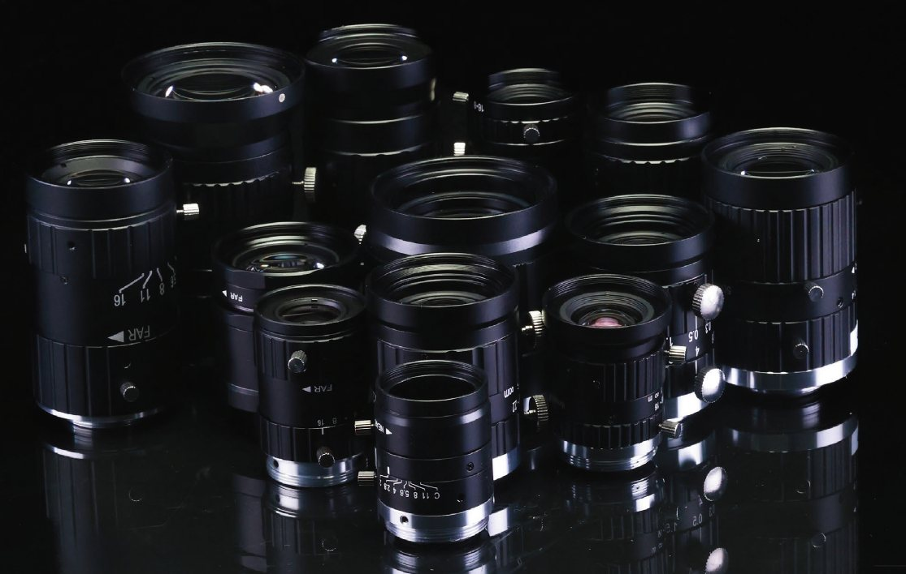
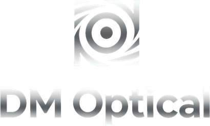
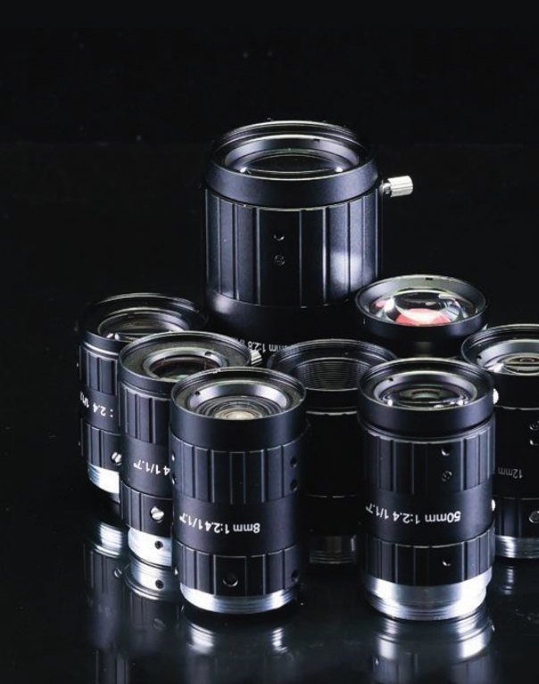
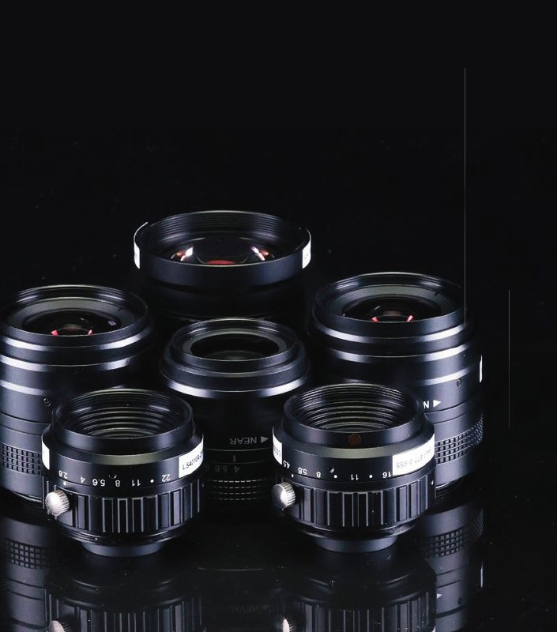

<title>DM Optical Brand Guidelines</title>
<meta name="claude:viewport-fit-sides" content="cover">
<link rel="preconnect" href="https://fonts.googleapis.com">
<link rel="preconnect" href="https://fonts.gstatic.com" crossorigin>
<link rel="stylesheet" href="https://fonts.googleapis.com/css2?family=League+Spartan:wght@500;700;800&family=Sanchez&family=Questrial&family=Jost:wght@400;500&display=swap">
<style>
/* Layout: a printed catalogue translated to the screen. Graphite pages, chrome display type,
   the lens rule flanking every section title, white "spec sheet" panels where data lives. */
:root {
  color-scheme: dark;
  /* Brand palette */
  --graphite: #141314;
  --carbon: #1e1e1e;
  --slate: #232324;
  --aperture: #060504;
  --steel: #5c5e60;
  --silver: #a5a7a8;
  --mist: #edeeee;
  --paper: #ffffff;
  --chrome: linear-gradient(180deg, #f5f6f6 0%, #d4d6d7 34%, #8a8e8f 62%, #5c5e60 80%, #a5a7a8 100%);
  --ring: linear-gradient(160deg, #d9dbdc 0%, #8a8e8f 45%, #3c3e40 100%);
  /* Page roles */
  --bg: var(--graphite);
  --surface: var(--carbon);
  --fg: #e9eaea;
  --muted: #9fa1a4;
  --line: #3a3b3d;
  --ink: #141314;
  --ink-muted: #5c5e60;
  --no: #e0665c;
  --ok: #8fc79a;
  /* Type */
  --display: "League Spartan", "Futura", "Century Gothic", sans-serif;
  --serif: "Sanchez", "Rockwell", "Roboto Slab", Georgia, serif;
  --body: "Questrial", "Glacial Indifference", "Century Gothic", "Avenir", sans-serif;
  --spec: "Jost", "Futura PT", "Futura", "Avenir Next", sans-serif;
  --wrap: 1120px;
}
* { box-sizing: border-box; }
body { background: var(--bg); color: var(--fg); font-family: var(--body); font-size: 16px; line-height: 1.6; -webkit-font-smoothing: antialiased; }
img { display: block; max-width: 100%; }
a { color: inherit; }
:focus-visible { outline: 2px solid var(--silver); outline-offset: 3px; }

.wrap { max-width: calc(var(--wrap) + 64px); margin: 0 auto; padding-left: max(16px, env(safe-area-inset-left, 0px)); padding-right: max(16px, env(safe-area-inset-right, 0px)); }
@media (min-width: 720px) { .wrap { padding-left: max(32px, env(safe-area-inset-left, 0px)); padding-right: max(32px, env(safe-area-inset-right, 0px)); } }

.chrome { color: #c9cbcc; background: var(--chrome); -webkit-background-clip: text; background-clip: text; -webkit-text-fill-color: transparent; }
h1, h2, h3, h4 { margin: 0; text-wrap: balance; font-weight: normal; }
p { margin: 0; max-width: 65ch; }
.eyebrow { font-family: var(--spec); font-size: 12px; letter-spacing: .14em; text-transform: uppercase; color: var(--muted); }

/* ---------- Hero ---------- */
.hero { position: relative; overflow: hidden; background: var(--graphite); }
.hero-inner { position: relative; display: grid; gap: 48px; padding-block: 56px; align-items: center; }
@media (min-width: 900px) { .hero-inner { grid-template-columns: minmax(0, 1.1fr) minmax(0, 1fr); } }
.hero-copy { display: grid; gap: 48px; min-width: 0; }
.iris-fig { margin: 0; display: grid; gap: 14px; justify-items: center; min-width: 0; }
#iris { width: min(100%, 460px); aspect-ratio: 1; max-width: 100%; display: block; }
.fstops { display: flex; flex-wrap: wrap; justify-content: center; gap: 2px; }
.fstops button { position: relative; font-family: var(--spec); font-size: 14px; font-variant-numeric: tabular-nums; background: none; border: 0; color: var(--muted); padding: 16px 9px 4px; cursor: pointer; }
.fstops button::before { content: ""; position: absolute; top: 3px; left: 50%; width: 1px; height: 8px; background: #55575a; }
.fstops button:hover { color: var(--fg); }
.fstops button[aria-checked="true"] { color: var(--paper); }
.fstops button[aria-checked="true"]::before { width: 0; height: 0; background: none; border-left: 5px solid transparent; border-right: 5px solid transparent; border-top: 8px solid var(--paper); transform: translateX(-50%); }
.iris-cap { font-family: var(--spec); font-size: 13px; color: var(--muted); text-align: center; max-width: 40ch; }
.iris-cap output { color: var(--fg); font-weight: 500; }

/* ---------- Focus-ring navigation ---------- */
body::before { content: ""; position: fixed; inset: 0 0 auto; height: env(safe-area-inset-top, 0px); z-index: 30; background: var(--graphite); }
.focus-bar { position: sticky; top: env(safe-area-inset-top, 0px); z-index: 20; background: rgba(20, 19, 20, .94); -webkit-backdrop-filter: blur(8px); backdrop-filter: blur(8px); border-block: 1px solid var(--line); }
.fb-inner { display: flex; align-items: center; gap: 20px; padding-block: 8px 6px; }
.fb-inner > img { width: 24px; flex: none; }
.scale { list-style: none; margin: 0; padding: 0 0 10px; display: flex; flex: 1; min-width: 0; gap: 22px; justify-content: space-between; overflow-x: auto; scrollbar-width: none; background: repeating-linear-gradient(90deg, #45474a 0 1px, transparent 1px 8px) left bottom / 100% 5px no-repeat; }
.scale::-webkit-scrollbar { display: none; }
.scale a { position: relative; display: grid; justify-items: center; gap: 0; text-decoration: none; font-family: var(--spec); font-size: 11px; letter-spacing: .12em; text-transform: uppercase; color: var(--muted); white-space: nowrap; padding: 2px 2px 0; }
.scale a .d { font-size: 13px; letter-spacing: .02em; color: #6a6d70; font-variant-numeric: tabular-nums; }
.scale a:hover { color: var(--fg); }
.scale a.on { color: var(--paper); }
.scale a.on .d { color: var(--silver); }
.scale a.on::after { content: ""; position: absolute; bottom: -10px; left: 50%; transform: translateX(-50%); border-left: 4px solid transparent; border-right: 4px solid transparent; border-bottom: 6px solid var(--paper); }

/* ---------- Five rules ---------- */
.rules5 { padding-block: 80px 8px; }
.rules5 .head { display: grid; gap: 6px; margin-bottom: 28px; }
.rules5 h2 { font-family: var(--serif); font-size: clamp(28px, 4vw, 40px); }
.r5-grid { display: grid; gap: 1px; background: var(--line); border: 1px solid var(--line); }
@media (min-width: 860px) { .r5-grid { grid-template-columns: repeat(6, 1fr); } .r5:nth-child(-n+2) { grid-column: span 3; } .r5:nth-child(n+3) { grid-column: span 2; } }
.r5 { background: var(--graphite); padding: 28px 24px 22px; display: grid; gap: 14px; align-content: space-between; min-height: 200px; min-width: 0; }
.r5 h3 { font-family: var(--display); font-weight: 800; font-size: clamp(28px, 3.4vw, 42px); line-height: .95; text-transform: uppercase; }
.r5 p { color: var(--muted); font-size: 15px; }
.r5 a { font-family: var(--spec); font-size: 12px; letter-spacing: .12em; text-transform: uppercase; color: var(--silver); text-decoration: none; justify-self: start; }
.r5 a:hover { color: var(--paper); }

/* ---------- Brand idea ---------- */
.idea { display: grid; gap: 22px; margin-bottom: 64px; }
.idea-line { font-family: var(--display); font-weight: 800; font-size: clamp(42px, 8vw, 104px); line-height: .9; text-transform: uppercase; letter-spacing: -.01em; max-width: none; }
.idea-line .dim { color: #3a3b3d; }
.idea-line .chrome { display: inline-block; }
.pillars { display: grid; gap: 1px; background: var(--line); border: 1px solid var(--line); }
@media (min-width: 720px) { .pillars { grid-template-columns: repeat(3, 1fr); } }
.pillar { padding: 22px; display: grid; gap: 8px; align-content: start; min-width: 0; }
.pillar:nth-child(1) { background: var(--aperture); }
.pillar:nth-child(2) { background: linear-gradient(180deg, #1e1e1e, #141314); }
.pillar:nth-child(3) { background: var(--carbon); }
.pillar h4 { font-family: var(--display); font-weight: 700; font-size: 18px; text-transform: uppercase; letter-spacing: .04em; }
.pillar p { font-size: 15px; color: var(--muted); }

/* ---------- Interludes ---------- */
.interlude { position: relative; overflow: hidden; background: #000; margin-top: 96px; }
.interlude > img { width: 100%; height: clamp(340px, 50vw, 620px); object-fit: cover; object-position: center 40%; }
.interlude .over { position: absolute; inset: auto 0 0 0; padding-block: 120px 44px; background: linear-gradient(rgba(0,0,0,0), rgba(0,0,0,.88) 60%); }
.big-say { font-family: var(--display); font-weight: 800; font-size: clamp(38px, 7.5vw, 104px); line-height: .9; text-transform: uppercase; max-width: 13ch; }
.interlude .over p { margin-top: 14px; color: #c3c5c6; font-size: 16px; }
.interlude.figure { background: var(--aperture); border-block: 1px solid var(--line); }
.interlude.figure .wrap { padding-block: 72px; display: grid; gap: 28px; align-items: end; }
@media (min-width: 860px) { .interlude.figure .wrap { grid-template-columns: auto 1fr; gap: 56px; } }
.giant { font-family: var(--display); font-weight: 800; font-size: clamp(110px, 24vw, 300px); line-height: .8; letter-spacing: -.03em; font-variant-numeric: tabular-nums; white-space: nowrap; }
.giant-copy { display: grid; gap: 14px; padding-bottom: 12px; min-width: 0; }
.giant-copy .eyebrow { color: var(--silver); }
.lockup { display: grid; gap: 14px; justify-items: start; position: relative; padding-bottom: 28px; }
.lockup::after { content: ""; position: absolute; left: -12px; bottom: 0; width: min(360px, 80%); height: 1px; background: var(--line); }
.lockup::before { content: ""; position: absolute; left: -12px; top: 10px; bottom: 0; width: 1px; background: var(--line); }
.lockup img { width: min(300px, 70vw); }
.tagline { font-family: var(--serif); font-size: 17px; color: #d6d7d8; letter-spacing: .01em; }
.hero-meta { font-family: var(--spec); font-size: 13px; color: var(--muted); letter-spacing: .04em; }
.hero h1 { font-family: var(--display); font-weight: 800; font-size: clamp(44px, 9vw, 104px); line-height: .92; letter-spacing: -.01em; text-transform: uppercase; }
.hero .sub { font-family: var(--serif); font-size: clamp(22px, 3.2vw, 34px); color: #dcdddd; margin-top: 10px; }
.hero .lede { margin-top: 22px; color: var(--muted); max-width: 52ch; }

/* ---------- Contents ---------- */
.toc { background: var(--carbon); border-bottom: 1px solid var(--line); }
.toc-inner { padding-block: 48px; display: grid; gap: 28px; }
@media (min-width: 860px) { .toc-inner { grid-template-columns: 220px 1fr; } }
.toc h2 { font-family: var(--serif); font-size: 34px; }
.toc ol { list-style: none; margin: 0; padding: 0; display: grid; gap: 4px 48px; }
@media (min-width: 720px) { .toc ol { grid-template-columns: 1fr 1fr; } }
.toc li a { display: flex; align-items: baseline; gap: 10px; text-decoration: none; padding: 6px 0; color: #d6d7d8; }
.toc li a:hover .t { color: var(--paper); }
.toc .t { font-family: var(--display); font-weight: 700; font-size: 15px; }
.toc .dots { flex: 1; border-bottom: 1px dotted #55575a; transform: translateY(-4px); min-width: 24px; }
.toc .n { font-family: var(--spec); font-variant-numeric: tabular-nums; color: var(--muted); font-size: 14px; }

/* ---------- Sections ---------- */
section.s { padding-block: 88px 24px; scroll-margin-top: 72px; }
.s-head { display: grid; gap: 14px; margin-bottom: 40px; }
.s-title { display: flex; align-items: center; gap: 18px; }
.s-title .num { font-family: var(--spec); color: var(--muted); font-size: 14px; font-variant-numeric: tabular-nums; letter-spacing: .08em; }
.s-title h2 { font-family: var(--display); font-weight: 800; font-size: clamp(30px, 5vw, 50px); line-height: 1; text-transform: uppercase; letter-spacing: -.005em; white-space: nowrap; }
.lens-rule { flex: 1; min-width: 40px; height: 7px; background:
  linear-gradient(90deg, #d4d6d7, #5c5e60 70%, transparent) top / 100% 1px no-repeat,
  linear-gradient(90deg, #a5a7a8, #3c3e40 70%, transparent) center / 100% 2px no-repeat,
  linear-gradient(90deg, #d4d6d7, #5c5e60 70%, transparent) bottom / 100% 1px no-repeat; }
@media (max-width: 520px) { .s-title h2 { white-space: normal; } .lens-rule { display: none; } }
.s-head .intro { color: var(--muted); font-size: 17px; max-width: 62ch; }

h3.sub { font-family: var(--serif); font-size: 24px; color: #e3e4e4; margin-bottom: 18px; padding-bottom: 10px; border-bottom: 1px solid var(--line); }
.block { margin-top: 56px; }
.block:first-of-type { margin-top: 0; }

.grid { display: grid; gap: 20px; }
@media (min-width: 720px) { .g2 { grid-template-columns: 1fr 1fr; } .g3 { grid-template-columns: repeat(3, 1fr); } }
@media (min-width: 960px) { .g4 { grid-template-columns: repeat(4, 1fr); } }
@media (min-width: 600px) and (max-width: 959px) { .g4 { grid-template-columns: 1fr 1fr; } }
.grid > * { min-width: 0; }

.note { font-size: 14px; color: var(--muted); }
.cap { font-family: var(--spec); font-size: 13px; color: var(--muted); }
.cap b { color: var(--fg); font-weight: 500; }

/* ---------- Brand ---------- */
.statement { font-family: var(--serif); font-size: clamp(22px, 3vw, 30px); line-height: 1.35; color: #e6e7e7; max-width: 30ch; }
.attr { border-top: 1px solid var(--line); padding-top: 18px; display: grid; gap: 8px; align-content: start; }
.attr h4 { font-family: var(--display); font-weight: 700; font-size: 22px; text-transform: uppercase; letter-spacing: .02em; }
.attr p { color: var(--muted); font-size: 15px; }
.facts { display: grid; gap: 0; border-top: 1px solid var(--line); }
.facts div { display: grid; grid-template-columns: 150px 1fr; gap: 16px; padding: 12px 0; border-bottom: 1px solid var(--line); font-size: 15px; }
.facts dt { font-family: var(--spec); color: var(--muted); font-size: 13px; letter-spacing: .06em; text-transform: uppercase; padding-top: 2px; }
.facts dd { margin: 0; min-width: 0; }
@media (max-width: 520px) { .facts div { grid-template-columns: 1fr; gap: 2px; } }

/* ---------- Logo ---------- */
.tile { border-radius: 2px; display: grid; place-items: center; padding: 40px 24px; min-height: 220px; position: relative; }
.tile.dark { background: var(--graphite); border: 1px solid var(--line); }
.tile.carbon { background: var(--carbon); }
.tile.light { background: var(--paper); }
.tile.mist { background: var(--mist); }
.tile.photo { background: #000 url("assets/photo-fa-cluster.jpg") center / cover; }
.tile img.h { width: min(320px, 90%); }
.tile img.v { width: min(190px, 70%); }
.tile img.i { width: 84px; }
.mono-white { filter: brightness(0) invert(1); }
.mono-black { filter: brightness(0); }
.fig { display: grid; gap: 10px; align-content: start; }
.tag { position: absolute; top: 12px; left: 14px; font-family: var(--spec); font-size: 11px; letter-spacing: .12em; text-transform: uppercase; color: var(--muted); }
.tile.light .tag, .tile.mist .tag { color: var(--ink-muted); }

.clear { background: var(--graphite); border: 1px solid var(--line); padding: 48px 20px; display: grid; place-items: center; overflow-x: auto; }
.clear-box { position: relative; padding: 34px; outline: 1px dashed #6a6d70; }
.clear-box img { width: min(300px, 60vw); outline: 1px solid #3c3e40; }
.clear-box .x { position: absolute; font-family: var(--spec); font-size: 12px; color: var(--silver); }
.clear-box .x.t { top: 8px; left: 50%; transform: translateX(-50%); }
.clear-box .x.l { left: 10px; top: 50%; transform: translateY(-50%); }
.clear-box .x.r { right: 10px; top: 50%; transform: translateY(-50%); }
.clear-box .x.b { bottom: 8px; left: 50%; transform: translateX(-50%); }
.sizes { display: flex; flex-wrap: wrap; gap: 28px; align-items: end; }
.sizes .fig { justify-items: start; }

.misuse .tile { min-height: 170px; padding: 28px 16px; overflow: hidden; }
.misuse .tile img.h { width: min(220px, 86%); }
.x-mark { position: absolute; top: 10px; right: 12px; width: 22px; height: 22px; border-radius: 50%; border: 1.5px solid var(--no); display: grid; place-items: center; }
.x-mark::before, .x-mark::after { content: ""; position: absolute; width: 11px; height: 1.5px; background: var(--no); transform: rotate(45deg); }
.x-mark::after { transform: rotate(-45deg); }
.fake-word { display: flex; align-items: center; gap: 12px; }
.fake-word img { width: 40px; }
.fake-word span { font-family: "Brush Script MT", "Comic Sans MS", cursive; font-size: 30px; color: #c9a227; }

/* ---------- Colour ---------- */
.swatches { display: grid; gap: 16px; }
@media (min-width: 600px) { .swatches { grid-template-columns: repeat(2, 1fr); } }
@media (min-width: 960px) { .swatches { grid-template-columns: repeat(4, 1fr); } }
.sw { border: 1px solid var(--line); border-radius: 2px; overflow: hidden; background: var(--carbon); display: grid; grid-template-rows: 132px auto; }
.sw .chip { position: relative; }
.sw .chip span { position: absolute; left: 14px; bottom: 10px; font-family: var(--spec); font-size: 11px; letter-spacing: .12em; text-transform: uppercase; }
.sw .info { padding: 14px 14px 16px; display: grid; gap: 4px; }
.sw h4 { font-family: var(--display); font-weight: 700; font-size: 18px; letter-spacing: .02em; }
.sw .role { font-size: 14px; color: var(--muted); min-height: 2.9em; }
.sw dl { margin: 8px 0 0; display: grid; grid-template-columns: auto 1fr; gap: 2px 12px; font-family: var(--spec); font-size: 13px; font-variant-numeric: tabular-nums; }
.sw dt { color: var(--muted); }
.sw dd { margin: 0; }
.copy { font: inherit; color: var(--fg); background: none; border: 0; padding: 0; cursor: pointer; text-align: left; border-bottom: 1px dotted #6a6d70; }
.copy:hover { color: var(--paper); }
.copy.done::after { content: " copied"; color: var(--ok); }

.ratio { display: flex; height: 64px; border-radius: 2px; overflow: hidden; border: 1px solid var(--line); }
.ratio div { display: flex; align-items: end; padding: 8px 12px; font-family: var(--spec); font-size: 12px; letter-spacing: .08em; text-transform: uppercase; min-width: 0; white-space: nowrap; }
.chrome-bar { height: 64px; border-radius: 2px; background: linear-gradient(90deg, #f5f6f6 0%, #d4d6d7 34%, #8a8e8f 62%, #5c5e60 80%, #a5a7a8 100%); }
.stops { display: flex; justify-content: space-between; gap: 8px; flex-wrap: wrap; font-family: var(--spec); font-size: 12px; color: var(--muted); font-variant-numeric: tabular-nums; }

/* ---------- Type ---------- */
.specimen { border-top: 1px solid var(--line); padding-block: 28px; display: grid; gap: 22px; }
@media (min-width: 860px) { .specimen { grid-template-columns: 260px 1fr; } }
.specimen .meta { display: grid; gap: 6px; align-content: start; }
.specimen .meta h4 { font-family: var(--display); font-weight: 700; font-size: 20px; }
.specimen .meta p { font-size: 14px; color: var(--muted); }
.specimen .show { min-width: 0; overflow-wrap: anywhere; }
.sp-display { font-family: var(--display); font-weight: 800; font-size: clamp(40px, 7vw, 76px); line-height: .95; text-transform: uppercase; }
.sp-serif { font-family: var(--serif); font-size: clamp(28px, 4vw, 44px); line-height: 1.15; color: #e3e4e4; }
.sp-body { font-family: var(--body); font-size: 18px; line-height: 1.65; color: #d6d7d8; }
.sp-spec { font-family: var(--spec); font-size: 22px; font-variant-numeric: tabular-nums; color: #d6d7d8; letter-spacing: .01em; }
.glyphs { margin-top: 10px; font-size: 15px; color: var(--muted); letter-spacing: .04em; }

.scale-wrap { overflow-x: auto; border: 1px solid var(--line); }
table.scale { width: 100%; min-width: 640px; border-collapse: collapse; font-size: 14px; }
table.scale th, table.scale td { text-align: left; padding: 12px 14px; border-bottom: 1px solid var(--line); vertical-align: middle; }
table.scale th { font-family: var(--spec); font-weight: 500; font-size: 12px; letter-spacing: .1em; text-transform: uppercase; color: var(--muted); background: var(--carbon); }
table.scale td.num { font-family: var(--spec); font-variant-numeric: tabular-nums; white-space: nowrap; }
table.scale tr:last-child td { border-bottom: 0; }

/* ---------- Graphic elements ---------- */
.el { background: var(--graphite); border: 1px solid var(--line); border-radius: 2px; min-height: 230px; display: grid; place-items: center; padding: 28px; position: relative; overflow: hidden; }
.el.light { background: var(--mist); border-color: var(--mist); }
.el svg.ap { width: 180px; }
.demo-rule { width: 100%; display: flex; align-items: center; gap: 14px; }
.demo-rule .lens-rule { max-width: none; }
.demo-rule .lens-rule.l { transform: scaleX(-1); flex: 0 0 22%; }
.demo-rule b { font-family: var(--display); font-weight: 800; font-size: 26px; text-transform: uppercase; white-space: nowrap; }
.frame { position: relative; padding: 26px 30px 22px; }
.frame::before { content: ""; position: absolute; inset: 0 18% 34% 0; border-top: 1px solid #6a6d70; border-left: 1px solid #6a6d70; }
.frame::after { content: ""; position: absolute; left: 0; right: -20px; bottom: 0; height: 1px; background: linear-gradient(90deg, #a5a7a8, transparent); }
.frame b { display: block; font-family: var(--display); font-weight: 800; font-size: 34px; line-height: .95; text-transform: uppercase; }
.frame b + b { padding-left: 1.2em; }
.frame span { display: block; margin-top: 16px; font-family: var(--serif); font-size: 18px; color: #d6d7d8; letter-spacing: .03em; }
.roundels { display: flex; gap: 18px; flex-wrap: wrap; justify-content: center; }
.roundel { width: 112px; aspect-ratio: 1; max-width: 100%; border-radius: 50%; padding: 10px; display: grid; }
.roundel > div { border-radius: 50%; display: grid; place-items: center; align-content: center; gap: 6px; text-align: center; font-family: var(--spec); font-size: 11px; line-height: 1.2; padding: 8px; }
.roundel svg { width: 30px; height: 30px; }
.roundel.on-light { background: linear-gradient(160deg, #f4f5f5, #b9bbbc); box-shadow: inset 0 0 0 1px #d4d6d7; }
.roundel.on-light > div { background: var(--paper); color: var(--ink); }
.roundel.on-dark { background: var(--ring); }
.roundel.on-dark > div { background: var(--aperture); color: #d6d7d8; }

/* ---------- Photography ---------- */
.photos { display: grid; gap: 16px; }
@media (min-width: 860px) { .photos { grid-template-columns: 1.6fr 1fr; grid-template-rows: auto auto; } .photos .big { grid-row: span 2; } }
.photos figure { margin: 0; display: grid; gap: 10px; }
.photos img { width: 100%; height: 100%; object-fit: cover; border-radius: 2px; }
.photos .big img { aspect-ratio: 1115 / 708; }
.photos .sm img { aspect-ratio: 4 / 3; object-position: center 70%; }
.rules { display: grid; gap: 20px; }
@media (min-width: 720px) { .rules { grid-template-columns: 1fr 1fr; } }
.rules ul { margin: 0; padding: 0; list-style: none; display: grid; gap: 10px; }
.rules li { padding-left: 26px; position: relative; font-size: 15px; color: #d6d7d8; }
.rules li::before { position: absolute; left: 0; top: 0; font-family: var(--spec); font-weight: 500; }
.rules .do li::before { content: "✓"; color: var(--ok); }
.rules .dont li::before { content: "✕"; color: var(--no); }
.rules h4 { font-family: var(--display); font-weight: 700; font-size: 16px; letter-spacing: .08em; text-transform: uppercase; margin-bottom: 14px; }

/* ---------- Layout / product page anatomy ---------- */
.anatomy { display: grid; gap: 32px; align-items: start; }
@media (min-width: 900px) { .anatomy { grid-template-columns: minmax(0, 420px) 1fr; } }
.a4 { width: 100%; max-width: 420px; aspect-ratio: 210 / 297; background: var(--paper); color: var(--ink); display: grid; grid-template-rows: 48% 1fr; box-shadow: 0 0 0 1px var(--line), 0 30px 60px -30px #000; container-type: inline-size; position: relative; }
.a4 .top { background: #000; display: grid; grid-template-columns: 55% 45%; position: relative; overflow: hidden; }
.a4 .top img.ph { width: 100%; height: 100%; object-fit: cover; object-position: center 60%; }
.a4 .top .txt { padding: 9cqw 5cqw 0 0; display: grid; align-content: start; gap: 2.2cqw; position: relative; }
.a4 .top .txt::before { content: ""; position: absolute; left: -3cqw; top: 6cqw; right: 0; height: 26cqw; border: 1px solid #3c3e40; border-right: 0; }
.a4 .logo-s { position: absolute; top: 4cqw; right: 4cqw; width: 6.5cqw; }
.a4 .ptitle { font-family: var(--display); font-weight: 800; font-size: 6.4cqw; line-height: .95; text-transform: uppercase; text-align: right; position: relative; }
.a4 .feat { font-family: var(--serif); font-size: 3.4cqw; color: #e3e4e4; border-bottom: 1px solid #a5a7a8; padding-bottom: 1cqw; margin-top: 3cqw; }
.a4 ul { margin: 0; padding-left: 3.2cqw; font-family: var(--body); font-size: 2.1cqw; line-height: 1.55; color: #e3e4e4; }
.a4 .bottom { padding: 5cqw 7cqw; display: grid; align-content: start; gap: 3cqw; }
.a4 .bottom h5 { margin: 0; font-family: var(--serif); font-weight: normal; font-size: 3.6cqw; }
.a4 table { width: 100%; border-collapse: collapse; font-family: var(--spec); font-size: 1.85cqw; text-align: center; font-variant-numeric: tabular-nums; }
.a4 th { background: var(--mist); font-weight: 400; padding: 1.6cqw .6cqw; color: #333; }
.a4 td { padding: 1.9cqw .6cqw; border-bottom: 1px solid #e3e4e4; color: #333; }
.a4 td:first-child { color: var(--ink-muted); }
.a4 .folio { position: absolute; bottom: 3cqw; left: 0; right: 0; text-align: center; font-family: "Noto Serif", "Droid Serif", Georgia, serif; font-weight: 700; font-size: 2.6cqw; }
.pin { position: absolute; width: 5.4cqw; height: 5.4cqw; border-radius: 50%; background: #e9eaea; color: var(--ink); font-family: var(--spec); font-weight: 500; font-size: 2.8cqw; display: grid; place-items: center; box-shadow: 0 0 0 .8cqw rgba(20,19,20,.55); z-index: 2; }
.callouts { list-style: none; margin: 0; padding: 0; display: grid; gap: 0; counter-reset: c; border-top: 1px solid var(--line); }
.callouts li { counter-increment: c; display: grid; grid-template-columns: 32px 1fr; gap: 14px; padding: 14px 0; border-bottom: 1px solid var(--line); font-size: 15px; color: #d6d7d8; }
.callouts li::before { content: counter(c); width: 26px; height: 26px; border-radius: 50%; background: #e9eaea; color: var(--ink); font-family: var(--spec); font-weight: 500; font-size: 13px; display: grid; place-items: center; }
.callouts b { color: var(--fg); font-weight: normal; font-family: var(--display); font-weight: 700; letter-spacing: .02em; }

.sheet { background: var(--paper); color: var(--ink); border-radius: 2px; padding: 28px 24px; }
.sheet h4 { font-family: var(--serif); font-size: 22px; margin-bottom: 16px; }
.sheet-scroll { overflow-x: auto; }
.sheet table { width: 100%; min-width: 680px; border-collapse: collapse; font-family: var(--spec); font-size: 14px; text-align: center; font-variant-numeric: tabular-nums; }
.sheet th { background: var(--mist); font-weight: 400; padding: 12px 8px; color: #333; line-height: 1.25; }
.sheet td { padding: 14px 8px; border-bottom: 1px solid #e3e4e4; color: #333; white-space: nowrap; }
.sheet td:first-child { color: var(--ink-muted); }

.notation { display: grid; gap: 0; border-top: 1px solid var(--line); }
.notation div { display: grid; grid-template-columns: minmax(0, 1fr) minmax(0, 1fr) minmax(0, 1.4fr); gap: 16px; padding: 12px 0; border-bottom: 1px solid var(--line); font-size: 15px; align-items: baseline; }
.notation .ok { font-family: var(--spec); color: var(--fg); }
.notation .bad { font-family: var(--spec); color: var(--muted); text-decoration: line-through; text-decoration-color: var(--no); }
.notation .why { color: var(--muted); font-size: 14px; }
.notation .hd { font-family: var(--spec); font-size: 12px; letter-spacing: .1em; text-transform: uppercase; color: var(--muted); }
@media (max-width: 560px) { .notation div { grid-template-columns: 1fr 1fr; } .notation .why { grid-column: 1 / -1; } .notation .hd .why { display: none; } }

/* ---------- Voice ---------- */
.says { display: grid; gap: 16px; }
@media (min-width: 720px) { .says { grid-template-columns: 1fr 1fr; } }
.say { border: 1px solid var(--line); border-radius: 2px; padding: 22px; display: grid; gap: 10px; align-content: start; background: var(--carbon); }
.say .lab { font-family: var(--spec); font-size: 12px; letter-spacing: .12em; text-transform: uppercase; }
.say.yes .lab { color: var(--ok); }
.say.no .lab { color: var(--no); }
.say q { quotes: none; font-family: var(--serif); font-size: 19px; line-height: 1.45; color: #e3e4e4; }
.say.no q { color: var(--muted); }
.say p { font-size: 14px; color: var(--muted); }
.names { display: grid; gap: 0; border-top: 1px solid var(--line); }
.names div { display: grid; grid-template-columns: minmax(0, 1.1fr) minmax(0, 1fr); gap: 16px; padding: 13px 0; border-bottom: 1px solid var(--line); font-size: 15px; }
.names .w { font-family: var(--display); font-weight: 700; font-size: 17px; }
.names .u { color: var(--muted); }
.formula { font-family: var(--spec); font-size: 15px; background: var(--carbon); border: 1px solid var(--line); padding: 16px 18px; border-radius: 2px; display: grid; gap: 8px; }
.formula code { font: inherit; color: var(--fg); }
.formula .ex { color: var(--muted); }
.fixes { list-style: none; margin: 0; padding: 0; display: grid; gap: 0; border-top: 1px solid var(--line); }
.fixes li { display: grid; grid-template-columns: 70px minmax(0, 1fr); gap: 14px; padding: 12px 0; border-bottom: 1px solid var(--line); font-size: 15px; }
.fixes .pg { font-family: var(--spec); color: var(--muted); font-size: 13px; padding-top: 2px; }
.fixes s { color: var(--muted); text-decoration-color: var(--no); }

.contact-card { background: var(--graphite); border: 1px solid var(--line); padding: 36px 28px; display: grid; gap: 22px; position: relative; overflow: hidden; }
.contact-card img { width: 220px; max-width: 70%; }
.contact-card .lines { font-family: var(--serif); font-size: 16px; line-height: 1.8; color: #dcdddd; overflow-wrap: anywhere; }

footer { border-top: 1px solid var(--line); margin-top: 88px; }
footer .wrap { padding-block: 36px 48px; display: flex; flex-wrap: wrap; gap: 16px 32px; justify-content: space-between; align-items: center; }
footer img { width: 34px; }
footer p { font-family: var(--spec); font-size: 13px; color: var(--muted); }

/* Focus pull: the title resolves from soft to sharp, once, on load */
@media (prefers-reduced-motion: no-preference) {
  .hero h1, .hero .sub { animation: focus 1.3s .15s cubic-bezier(.2,.7,.2,1) both; }
  .hero .sub { animation-delay: .35s; }
  @keyframes focus { from { filter: blur(9px); opacity: .55; } to { filter: blur(0); opacity: 1; } }
  html { scroll-behavior: smooth; }
}
</style>

<!-- Hero -->
<header class="hero">
  <div class="wrap hero-inner">
    <div class="hero-copy">
      <div class="lockup">
        
        <div class="tagline">Vision Ahead, Precision Beyond</div>
      </div>
      <div>
        <div class="hero-meta">V1.1 2026.10 | Identity · Colour · Type · Layout · Voice</div>
        <h1 class="chrome" style="margin-top:14px">Brand<br>Guidelines</h1>
        <div class="sub">Out of the dark, into focus.</div>
        <p class="lede">How DM Optical looks, reads and sounds across catalogues, datasheets, decks, trade-show graphics and the web. Every rule here is drawn from Product Catalog V1.1, so new material sits next to it without friction.</p>
      </div>
    </div>
    <figure class="iris-fig">
      <svg id="iris" viewBox="-114 -114 228 228" role="img" aria-label="Eight-blade lens aperture revealing the DM Optical Iris mark">
        <defs>
          <clipPath id="disk"><circle r="100"/></clipPath>
          <radialGradient id="glow"><stop offset="0" stop-color="#3a3b3d"/><stop offset=".55" stop-color="#141314"/><stop offset="1" stop-color="#060504"/></radialGradient>
          <linearGradient id="rim" x1="0" y1="0" x2="0" y2="1"><stop offset="0" stop-color="#f5f6f6"/><stop offset=".35" stop-color="#d4d6d7"/><stop offset=".62" stop-color="#8a8e8f"/><stop offset=".8" stop-color="#5c5e60"/><stop offset="1" stop-color="#a5a7a8"/></linearGradient>
        </defs>
        <g clip-path="url(#disk)">
          <circle r="100" fill="url(#glow)"/>
          <image href="assets/logo-icon.png" x="-44" y="-44" width="88" height="88"/>
          <path id="blades" fill="#0b0a0b" fill-rule="evenodd"/>
          <path id="edges" fill="none" stroke="#262628" stroke-width="1.4"/>
        </g>
        <circle r="100" fill="none" stroke="url(#rim)" stroke-width="4"/>
        <g id="ticks" stroke="#45474a" stroke-width=".7"></g>
      </svg>
      <div class="fstops" role="radiogroup" aria-label="Aperture">
        <button type="button" role="radio" aria-checked="false" data-d="72">1.4</button>
        <button type="button" role="radio" aria-checked="false" data-d="58">2</button>
        <button type="button" role="radio" aria-checked="true" data-d="46">2.8</button>
        <button type="button" role="radio" aria-checked="false" data-d="36">4</button>
        <button type="button" role="radio" aria-checked="false" data-d="27">5.6</button>
        <button type="button" role="radio" aria-checked="false" data-d="19">8</button>
        <button type="button" role="radio" aria-checked="false" data-d="13">11</button>
        <button type="button" role="radio" aria-checked="false" data-d="8">16</button>
      </div>
      <figcaption class="iris-cap">Aperture <output id="fval">f/2.8</output>. Turn the ring: the Iris mark lives inside the lens.</figcaption>
    </figure>
  </div>
</header>

<!-- Focus-ring navigation -->
<nav class="focus-bar" aria-label="Sections">
  <div class="wrap fb-inner">
    
    <ol class="scale">
      <li><a href="#brand"><span class="d">01</span>Brand</a></li>
      <li><a href="#logo"><span class="d">02</span>Logo</a></li>
      <li><a href="#colour"><span class="d">03</span>Colour</a></li>
      <li><a href="#type"><span class="d">04</span>Type</a></li>
      <li><a href="#elements"><span class="d">05</span>Elements</a></li>
      <li><a href="#photo"><span class="d">06</span>Photo</a></li>
      <li><a href="#layout"><span class="d">07</span>Layout</a></li>
      <li><a href="#voice"><span class="d">08</span>Voice</a></li>
    </ol>
  </div>
</nav>

<main>
<div class="wrap">

<!-- Five rules -->
<div class="rules5">
  <div class="head"><span class="eyebrow">If you remember nothing else</span><h2>The brand in five rules</h2></div>
  <div class="r5-grid">
    <div class="r5"><h3 class="chrome">Black first.<br>Chrome last.</h3><p>Dark grounds carry the brand. Chrome is the final 10%: logo, titles, rules.</p><a href="#colour">03 Colour →</a></div>
    <div class="r5"><h3 class="chrome">The product is the only colour.</h3><p>No brand hue. Colour comes from coatings and index rings on the lenses themselves.</p><a href="#photo">06 Photography →</a></div>
    <div class="r5"><h3 class="chrome">Numbers before adjectives.</h3><p>Say "&lt;0.1% distortion", not "ultra-sharp".</p><a href="#voice">08 Voice →</a></div>
    <div class="r5"><h3 class="chrome">One light, one direction.</h3><p>Low-key studio light from above, on black gloss, every time.</p><a href="#photo">06 Photography →</a></div>
    <div class="r5"><h3 class="chrome">Leave room in the dark.</h3><p>Keep empty black space for the title and the Iris mark.</p><a href="#layout">07 Layout →</a></div>
  </div>
</div>

<!-- 01 Brand -->
<section class="s" id="brand">
  <div class="s-head">
    <div class="s-title"><span class="num">01</span><h2 class="chrome">The Brand</h2><span class="lens-rule"></span></div>
  </div>
  <div class="idea">
    <span class="eyebrow">Brand idea</span>
    <p class="idea-line"><span class="dim">Out of the dark,</span><br><span class="chrome">into focus.</span></p>
    <p class="note" style="font-size:17px">A lens gathers light out of darkness and resolves it into a sharp image. That is what our products do for a machine, and it is how our brand looks. When you're unsure about a layout, photo or sentence, ask: does it come out of the dark and into focus?</p>
    <div class="pillars">
      <div class="pillar"><h4>The dark</h4><p>Graphite and Aperture black grounds. Quiet, calm, generous space.</p></div>
      <div class="pillar"><h4>The light</h4><p>Chrome caught on edges: the logo, the titles, the rim of a lens.</p></div>
      <div class="pillar"><h4>The focus</h4><p>Exact numbers, exact alignment, every detail sharp.</p></div>
    </div>
  </div>
  <div class="grid g2" style="gap:48px">
    <div style="display:grid;gap:22px;align-content:start">
      <p class="statement">We supply the lenses that let machines see accurately, and the engineering support to get them working on the line.</p>
      <p class="note" style="font-size:16px">DM Optical Pte Ltd is the Singapore subsidiary of Hunan Chiopt Optical Technology Co., Ltd (Chiopt), founded in 2010 in Changsha. We bring Chiopt's R&amp;D and manufacturing to customers in Singapore and the wider region: FA, line scan, large format, telecentric and specialised lenses for machine vision.</p>
    </div>
    <dl class="facts" style="margin:0">
      <div><dt>Legal name</dt><dd>DM Optical Pte Ltd</dd></div>
      <div><dt>Parent</dt><dd>Hunan Chiopt Optical Technology Co., Ltd (Chiopt)</dd></div>
      <div><dt>Tagline</dt><dd>Vision Ahead, Precision Beyond</dd></div>
      <div><dt>Audience</dt><dd>Machine vision engineers, system integrators, automation and QA managers, procurement teams</dd></div>
      <div><dt>Markets</dt><dd>Lithium battery, solar, electronics, automotive, PCB, semiconductor, display panel, logistics, packaging, food &amp; beverage, medical, plastics</dd></div>
    </dl>
  </div>

  <div class="block">
    <h3 class="sub">Brand attributes</h3>
    <div class="grid g3" style="gap:28px">
      <div class="attr"><h4 class="chrome">Precise</h4><p>We lead with numbers: resolution, distortion, focal length, mount. Claims are specific and checkable. Layouts are aligned, quiet and exact.</p></div>
      <div class="attr"><h4 class="chrome">Dependable</h4><p>Backed by Chiopt's manufacturing ecosystem since 2010. We show the product as it is, in consistent studio light, with no exaggeration.</p></div>
      <div class="attr"><h4 class="chrome">Responsive</h4><p>A local team that answers. Every piece ends with a clear way to reach sales, and copy speaks to the engineer's real task.</p></div>
    </div>
  </div>

  <div class="block">
    <h3 class="sub">Brand specifications</h3>
    <div class="sheet">
      <h4>Brand Performance Specifications</h4>
      <div class="sheet-scroll">
        <table>
          <thead><tr><th>Model No</th><th>Grounds</th><th>Brand<br>hues</th><th>Chrome<br>coverage</th><th>Typefaces</th><th>Min. logo</th><th>Clear<br>space</th><th>Off-brand<br>distortion</th></tr></thead>
          <tbody><tr><td>DMO-ID-2026</td><td>Graphite / Paper</td><td>0</td><td>≤10%</td><td>4</td><td>6mm · 20px</td><td>½ mark</td><td>&lt;0.1%</td></tr></tbody>
        </table>
      </div>
    </div>
    <p class="note" style="margin-top:14px">The whole system on one line, written the way we write about lenses.</p>
  </div>
</section>

</div>
<div class="interlude">
  
  <div class="over"><div class="wrap"><p class="big-say chrome">The product is the only colour.</p><p>No brand hue competes with the glass and the steel.</p></div></div>
</div>
<div class="wrap">

<!-- 02 Logo -->
<section class="s" id="logo">
  <div class="s-head">
    <div class="s-title"><span class="num">02</span><h2 class="chrome">Logo</h2><span class="lens-rule"></span></div>
    <p class="intro">The logo pairs the Iris mark (a focused target inside turning shutter blades) with the DM Optical wordmark. Always use the supplied artwork. Never redraw or retype it.</p>
  </div>

  <div class="block">
    <h3 class="sub">Versions</h3>
    <div class="grid g3">
      <div class="fig"><div class="tile dark"><span class="tag">Primary</span></div><div class="cap"><b>Horizontal lockup.</b> Default for covers, letterheads, web headers and email signatures.</div></div>
      <div class="fig"><div class="tile dark"><span class="tag">Stacked</span></div><div class="cap"><b>Stacked lockup.</b> For square or narrow spaces: booth panels, social avatars, packaging ends.</div></div>
      <div class="fig"><div class="tile dark"><span class="tag">Mark</span></div><div class="cap"><b>Iris mark.</b> Page corners, favicons, lens caps, and wherever the brand is already named.</div></div>
    </div>
  </div>

  <div class="block">
    <h3 class="sub">Colour treatments</h3>
    <div class="grid g4">
      <div class="fig"><div class="tile dark"></div><div class="cap"><b>Chrome on Graphite.</b> The signature treatment. Use whenever the background is dark.</div></div>
      <div class="fig"><div class="tile carbon"></div><div class="cap"><b>White.</b> One-colour print, embroidery, laser etching, and small digital sizes.</div></div>
      <div class="fig"><div class="tile light"></div><div class="cap"><b>Black on Paper.</b> All light backgrounds, documents, invoices and fax-safe forms.</div></div>
      <div class="fig"><div class="tile photo"></div><div class="cap"><b>Over photography.</b> Only on the black studio sweep, never over the product itself.</div></div>
    </div>
  </div>

  <div class="block">
    <h3 class="sub">Clear space and minimum size</h3>
    <div class="grid g2" style="gap:32px">
      <div class="fig">
        <div class="clear"><div class="clear-box"><span class="x t">X</span><span class="x l">X</span><span class="x r">X</span><span class="x b">X</span></div></div>
        <div class="cap"><b>X = half the height of the Iris mark.</b> Keep this space clear of text, edges, folds and other logos on all four sides.</div>
      </div>
      <div style="display:grid;gap:24px;align-content:start">
        <div class="sizes">
          <div class="fig"><div class="cap"><b>Horizontal</b><br>30 mm print · 120 px screen</div></div>
          <div class="fig"><div class="cap"><b>Stacked</b><br>18 mm · 64 px</div></div>
          <div class="fig"><div class="cap"><b>Mark</b><br>6 mm · 20 px</div></div>
        </div>
        <p class="note">Below these sizes the chrome gradient turns muddy and the shutter blades fill in. Switch to the White or Black version at small sizes and in any process that cannot hold a gradient (single-colour print, engraving, embroidery).</p>
        <p class="note">On catalogue and datasheet pages the Iris mark sits in the top-right corner, 15 mm wide, aligned to the top margin, as in Product Catalog V1.1.</p>
      </div>
    </div>
  </div>

  <div class="block misuse">
    <h3 class="sub">Do not</h3>
    <div class="grid g3">
      <div class="fig"><div class="tile dark"><span class="x-mark"></span></div><div class="cap">Stretch, squash or change the proportions.</div></div>
      <div class="fig"><div class="tile dark"><span class="x-mark"></span></div><div class="cap">Rotate or set the logo on an angle.</div></div>
      <div class="fig"><div class="tile dark"><span class="x-mark"></span></div><div class="cap">Recolour it. The brand has no hue; the logo is chrome, white or black.</div></div>
      <div class="fig"><div class="tile dark"><span class="x-mark"></span></div><div class="cap">Add glows, drop shadows, bevels or outlines.</div></div>
      <div class="fig"><div class="tile mist"><span class="x-mark"></span></div><div class="cap">Use the chrome version on light grounds. It loses contrast; use Black.</div></div>
      <div class="fig"><div class="tile dark"><span class="x-mark"></span><div class="fake-word"><span>DM Optical</span></div></div><div class="cap">Retype the wordmark or pair the mark with another font.</div></div>
    </div>
  </div>
</section>

<!-- 03 Colour -->
<section class="s" id="colour">
  <div class="s-head">
    <div class="s-title"><span class="num">03</span><h2 class="chrome">Colour</h2><span class="lens-rule"></span></div>
    <p class="intro">DM Optical is monochrome: black glass, anodised metal, polished steel. The palette is a run of neutrals plus one Chrome gradient. There is no accent hue. Colour in our material comes only from the products themselves, such as the red ring on a line scan barrel or a coated lens reflection.</p>
  </div>

  <div class="swatches">
    <div class="sw"><div class="chip" style="background:var(--graphite);box-shadow:inset 0 -1px 0 var(--line)"><span style="color:var(--muted)">Primary</span></div><div class="info"><h4>Graphite</h4><div class="role">Covers, section openers, dark page grounds.</div><dl><dt>HEX</dt><dd><button class="copy" type="button" data-v="#141314">#141314</button></dd><dt>RGB</dt><dd>20 19 20</dd><dt>CMYK</dt><dd>60 50 50 100 (rich black)</dd></dl></div></div>
    <div class="sw"><div class="chip" style="background:var(--carbon)"><span style="color:var(--muted)">Primary</span></div><div class="info"><h4>Carbon</h4><div class="role">Contents pages, panels and cards on Graphite.</div><dl><dt>HEX</dt><dd><button class="copy" type="button" data-v="#1E1E1E">#1E1E1E</button></dd><dt>RGB</dt><dd>30 30 30</dd><dt>CMYK</dt><dd>0 0 0 88</dd></dl></div></div>
    <div class="sw"><div class="chip" style="background:var(--aperture)"><span style="color:var(--muted)">Primary</span></div><div class="info"><h4>Aperture</h4><div class="role">The iris watermark, photo backgrounds, deepest shadows.</div><dl><dt>HEX</dt><dd><button class="copy" type="button" data-v="#060504">#060504</button></dd><dt>RGB</dt><dd>6 5 4</dd><dt>CMYK</dt><dd>60 60 60 100 (rich black)</dd></dl></div></div>
    <div class="sw"><div class="chip" style="background:var(--chrome)"><span style="color:#141314">Signature</span></div><div class="info"><h4>Chrome</h4><div class="role">Logo, display headlines, rules. Never body text.</div><dl><dt>Stops</dt><dd>#F5F6F6 → #5C5E60</dd><dt>Print</dt><dd>Silver foil, or K 5→65%</dd></dl></div></div>
    <div class="sw"><div class="chip" style="background:var(--silver)"><span style="color:#141314">Secondary</span></div><div class="info"><h4>Silver</h4><div class="role">Rules, roundel rings, muted text on dark.</div><dl><dt>HEX</dt><dd><button class="copy" type="button" data-v="#A5A7A8">#A5A7A8</button></dd><dt>RGB</dt><dd>165 167 168</dd><dt>CMYK</dt><dd>0 0 0 35</dd></dl></div></div>
    <div class="sw"><div class="chip" style="background:var(--steel)"><span style="color:#e9eaea">Secondary</span></div><div class="info"><h4>Steel</h4><div class="role">Model numbers, captions and secondary text on white.</div><dl><dt>HEX</dt><dd><button class="copy" type="button" data-v="#5C5E60">#5C5E60</button></dd><dt>RGB</dt><dd>92 94 96</dd><dt>CMYK</dt><dd>0 0 0 64</dd></dl></div></div>
    <div class="sw"><div class="chip" style="background:var(--mist)"><span style="color:#5c5e60">Secondary</span></div><div class="info"><h4>Mist</h4><div class="role">Spec table headers, light page tints.</div><dl><dt>HEX</dt><dd><button class="copy" type="button" data-v="#EDEEEE">#EDEEEE</button></dd><dt>RGB</dt><dd>237 238 238</dd><dt>CMYK</dt><dd>0 0 0 7</dd></dl></div></div>
    <div class="sw"><div class="chip" style="background:var(--paper)"><span style="color:#5c5e60">Secondary</span></div><div class="info"><h4>Paper</h4><div class="role">Spec sheet pages, documents, forms.</div><dl><dt>HEX</dt><dd><button class="copy" type="button" data-v="#FFFFFF">#FFFFFF</button></dd><dt>RGB</dt><dd>255 255 255</dd><dt>CMYK</dt><dd>0 0 0 0</dd></dl></div></div>
  </div>

  <div class="block grid g2" style="gap:32px">
    <div class="fig">
      <h3 class="sub">Balance</h3>
      <div class="ratio">
        <div style="flex:62;background:var(--graphite);color:var(--muted)">Graphite / Carbon 62%</div>
        <div style="flex:28;background:var(--paper);color:var(--steel)">Paper / Mist 28%</div>
        <div style="flex:10;background:var(--chrome);color:#141314"></div>
      </div>
      <div class="cap">Dark grounds carry the brand, white pages carry the data, and Chrome is the finishing 10%.</div>
    </div>
    <div class="fig">
      <h3 class="sub">Chrome gradient</h3>
      <div class="chrome-bar"></div>
      <div class="stops"><span>#F5F6F6 0%</span><span>#D4D6D7 34%</span><span>#8A8E8F 62%</span><span>#5C5E60 80%</span><span>#A5A7A8 100%</span></div>
      <div class="cap">Runs top to bottom on type (light at the cap height, darkest just below the middle, a lift at the baseline). Apply it to League Spartan headlines of 24 pt / 32 px and larger.</div>
    </div>
  </div>
  <p class="note" style="margin-top:28px">Print dark grounds as rich black (C60 M50 Y50 K100), never as K100 alone, which prints as a flat charcoal next to the photography. Proof the Chrome gradient on the actual stock; on uncoated paper, swap it for a flat Silver.</p>
</section>

<!-- 04 Type -->
<section class="s" id="type">
  <div class="s-head">
    <div class="s-title"><span class="num">04</span><h2 class="chrome">Typography</h2><span class="lens-rule"></span></div>
    <p class="intro">Four families, each with one job: a heavy geometric for titles, a slab serif for subtitles, a clean geometric sans for reading, and Futura for numbers. These are the faces already set in Product Catalog V1.1.</p>
  </div>

  <div class="specimen">
    <div class="meta"><span class="eyebrow">Display</span><h4>League Spartan Bold</h4><p>Section and product titles. All caps, tight tracking, Chrome gradient on dark, Graphite on light. Free on Google Fonts.</p></div>
    <div class="show"><div class="sp-display chrome">Line Scan Lens</div><div class="glyphs" style="font-family:var(--display);font-weight:700">ABCDEFGHIJKLMNOPQRSTUVWXYZ 0123456789 μ φ ″</div></div>
  </div>
  <div class="specimen">
    <div class="meta"><span class="eyebrow">Subtitle</span><h4>Sanchez Regular</h4><p>Subtitles, sub-heads and labels such as "Industrial Lens", "FEATURES" and "Optical Performance Specifications". Also the tagline and contact lines. Free on Google Fonts.</p></div>
    <div class="show"><div class="sp-serif">Optical Performance Specifications</div><div class="glyphs" style="font-family:var(--serif)">Aa Bb Cc Dd Ee Ff Gg 0123456789 · FEATURES</div></div>
  </div>
  <div class="specimen">
    <div class="meta"><span class="eyebrow">Body</span><h4>Glacial Indifference</h4><p>Running text, feature bullets and descriptions. Open-licence (SIL OFL); install it for print work. On the web, use Questrial, shown here, as the stand-in.</p></div>
    <div class="show"><p class="sp-body">Telecentric lenses are built for ultra-precise measurement and inspection, eliminating perspective error for true-to-size imaging.</p></div>
  </div>
  <div class="specimen">
    <div class="meta"><span class="eyebrow">Data</span><h4>Futura PT Book</h4><p>Specification tables, model numbers and figures. On the web, use Jost (shown) with tabular figures switched on.</p></div>
    <div class="show"><div class="sp-spec">28240260 · 12mm · F2.4–16 · &lt;0.1% · M27×P0.5 · 35.1°×26.92°</div></div>
  </div>

  <div class="block">
    <h3 class="sub">Type scale</h3>
    <div class="scale-wrap">
      <table class="scale">
        <thead><tr><th>Role</th><th>Face</th><th>A4 print</th><th>Screen</th><th>Example</th></tr></thead>
        <tbody>
          <tr><td>Cover title</td><td>League Spartan Bold, caps</td><td class="num">44 pt</td><td class="num">64–104 px</td><td>PRODUCT CATALOG</td></tr>
          <tr><td>Section title</td><td>League Spartan Bold, caps</td><td class="num">36 pt</td><td class="num">40–56 px</td><td>FA LENS</td></tr>
          <tr><td>Product title</td><td>League Spartan Bold, caps</td><td class="num">28 pt</td><td class="num">32–44 px</td><td>1/1.7″ 12MP FA LENS</td></tr>
          <tr><td>Subtitle</td><td>Sanchez</td><td class="num">18 pt</td><td class="num">22–28 px</td><td>Industrial Lens</td></tr>
          <tr><td>Sub-head</td><td>Sanchez, caps for FEATURES</td><td class="num">14 pt</td><td class="num">18–22 px</td><td>Optical Performance Specifications</td></tr>
          <tr><td>Body</td><td>Glacial Indifference</td><td class="num">9.5 pt / 15 pt</td><td class="num">16 px / 1.6</td><td>Feature bullets, descriptions</td></tr>
          <tr><td>Table</td><td>Futura PT Book</td><td class="num">7.5 pt</td><td class="num">13–14 px</td><td>Spec values, model numbers</td></tr>
          <tr><td>Folio</td><td>Noto Serif Bold</td><td class="num">10 pt</td><td class="num">n/a</td><td>04</td></tr>
        </tbody>
      </table>
    </div>
    <p class="note" style="margin-top:16px">Justify body copy only in wide single columns (as on the About page); everywhere else set it ragged right. Never set running text in League Spartan or in the Chrome gradient.</p>
  </div>
</section>

<!-- 05 Elements -->
<section class="s" id="elements">
  <div class="s-head">
    <div class="s-title"><span class="num">05</span><h2 class="chrome">Graphic Elements</h2><span class="lens-rule"></span></div>
    <p class="intro">A small kit taken from the lens itself. Use these instead of generic shapes, icons or stock textures.</p>
  </div>
  <div class="grid g2">
    <div class="fig">
      <div class="el"><svg class="ap" viewBox="-110 -110 220 220" aria-hidden="true"><circle r="100" fill="#060504"/><circle r="100" fill="none" stroke="#2a2a2c" stroke-width="1"/><path d="M30.0 12.4L30.0 -95.4M12.4 30.0L88.7 -46.2M-12.4 30.0L95.4 30.0M-30.0 12.4L46.2 88.7M-30.0 -12.4L-30.0 95.4M-12.4 -30.0L-88.7 46.2M12.4 -30.0L-95.4 -30.0M30.0 -12.4L-46.2 -88.7" stroke="#141314" stroke-width="4.5" fill="none"/></svg></div>
      <div class="cap"><b>Aperture watermark.</b> An eight-blade iris in Aperture on Graphite. Bleed it off one edge at 60–90% of the page width, as on the catalogue covers. Tone-on-tone only; never outline it in Silver.</div>
    </div>
    <div class="fig">
      <div class="el"><div class="demo-rule"><span class="lens-rule l"></span><b class="chrome">Applications</b><span class="lens-rule"></span></div></div>
      <div class="cap"><b>Lens rule.</b> Three fine lines, like the edge of a lens barrel, flanking a section title. The short side runs to the page bleed and the long side fades out toward the margin.</div>
    </div>
    <div class="fig">
      <div class="el"><div class="frame"><b class="chrome">1″ 5MP</b><b class="chrome">FA Lens</b><span>FEATURES</span></div></div>
      <div class="cap"><b>Viewfinder frame.</b> A 0.5 pt open bracket around product titles, with the second line indented. Pair it with a fading Silver underline beneath FEATURES.</div>
    </div>
    <div class="fig">
      <div class="el" style="gap:18px">
        <div class="roundels">
          <div class="roundel on-dark"><div><svg viewBox="0 0 32 32" fill="none" stroke="currentColor" stroke-width="1.4"><rect x="4" y="10" width="24" height="15" rx="1"/><path d="M9 7v3M23 7v3M9 17.5h4M11 15.5v4M19 17.5h4M16 13l-2 5h4l-2 5"/></svg>Lithium<br>Battery</div></div>
          <div class="roundel on-dark"><div><svg viewBox="0 0 32 32" fill="none" stroke="currentColor" stroke-width="1.4"><rect x="9" y="9" width="14" height="14" rx="1"/><rect x="13" y="13" width="6" height="6"/><path d="M12 9V5M16 9V5M20 9V5M12 27v-4M16 27v-4M20 27v-4M9 12H5M9 16H5M9 20H5M27 12h-4M27 16h-4M27 20h-4"/></svg>Semi-<br>conductor</div></div>
          <div class="roundel on-light"><div><svg viewBox="0 0 32 32" fill="none" stroke="currentColor" stroke-width="1.4"><path d="M3 10h15v12H3zM18 14h6l4 4v4h-10z"/><circle cx="8" cy="24" r="2.2"/><circle cx="23" cy="24" r="2.2"/><path d="M1 13h5M1 16h7"/></svg>Logistics</div></div>
        </div>
      </div>
      <div class="cap"><b>Application roundel.</b> A line icon (1.25 pt stroke) inside a disc with a Chrome-to-graphite ring. Use them in sets of four or six, on one baseline, with a thin connector to the use-case list below.</div>
    </div>
  </div>
</section>

<!-- 06 Photography -->
<section class="s" id="photo">
  <div class="s-head">
    <div class="s-title"><span class="num">06</span><h2 class="chrome">Photography</h2><span class="lens-rule"></span></div>
    <p class="intro">Low-key studio product photography. Lenses sit on a black gloss surface with a mirror reflection. Light rakes from above to pick out knurling, engraved scales and the coated glass. The photo should look like the catalogue page it sits on.</p>
  </div>
  <div class="photos">
    <figure class="big"><figcaption class="cap"><b>Range shot.</b> A family arranged in depth, largest at the back and the hero lens front and centre. Use it for category openers.</figcaption></figure>
    <figure class="sm"><figcaption class="cap"><b>Series shot.</b> Five to nine lenses of one series, with focal length markings legible.</figcaption></figure>
    <figure class="sm"><figcaption class="cap"><b>Detail.</b> Cropped close, bleeding off the page edge into the dark band.</figcaption></figure>
  </div>
  <div class="rules block" style="margin-top:36px">
    <div class="do"><h4>Do</h4><ul>
      <li>Shoot on pure black with a glossy acrylic base for the reflection.</li>
      <li>Keep a neutral, slightly cool white balance so the metal reads as steel.</li>
      <li>Leave the dark sweep empty on one side for titles and the logo.</li>
      <li>Show front elements and engraved scales clearly; they prove quality.</li>
      <li>Retouch dust and fingerprints. Keep the real colour of coatings and red index rings.</li>
    </ul></div>
    <div class="dont"><h4>Don't</h4><ul>
      <li>Cut lenses out onto white or coloured backgrounds in brand material.</li>
      <li>Add coloured gels, lens flares, bokeh or sci-fi light effects.</li>
      <li>Use generic stock factory or robot imagery in place of our products.</li>
      <li>Mix lighting styles within one spread or one product family.</li>
      <li>Show competitors' cameras with visible branding.</li>
    </ul></div>
  </div>
</section>

</div>
<div class="interlude figure">
  <div class="wrap">
    <div class="giant chrome">&lt;0.1%</div>
    <div class="giant-copy">
      <span class="eyebrow">TV distortion · 1″ 5MP FA Lens, 25–75mm</span>
      <p class="big-say" style="font-size:clamp(30px,4.6vw,56px)">Numbers before adjectives.</p>
      <p class="note" style="font-size:16px">An engineer trusts a figure they can check. Lead with it, then say what it means for their inspection.</p>
    </div>
  </div>
</div>
<div class="wrap">

<!-- 07 Layout -->
<section class="s" id="layout">
  <div class="s-head">
    <div class="s-title"><span class="num">07</span><h2 class="chrome">Layout &amp; Spec Sheets</h2><span class="lens-rule"></span></div>
    <p class="intro">Every product page has the same two-part build: a dark band that sells, and a white sheet that specifies. Keep it identical across catalogues, single-product datasheets and the website so a customer always knows where to look.</p>
  </div>

  <div class="anatomy">
    <div class="a4" role="img" aria-label="Annotated example of a product page">
      <div class="top">
        
        <div class="txt">
          <div class="ptitle chrome">1/1.7″ 12MP<br>FA Lens</div>
          <div class="feat">FEATURES</div>
          <ul><li>Focal length range: 4–75mm</li><li>Optimised for 1.8µm camera</li><li>Resolution up to 12MP</li><li>Compatible with Sony IMX226</li></ul>
        </div>
        
      </div>
      <div class="bottom">
        <h5>Optical Performance Specifications</h5>
        <table>
          <thead><tr><th>Model No</th><th>Focal length</th><th>F.NO</th><th>TV Distortion</th><th>Mount</th></tr></thead>
          <tbody>
            <tr><td>28160260</td><td>4mm</td><td>2.8–16</td><td>&lt;-2.02%</td><td>C-Mount</td></tr>
            <tr><td>28180260</td><td>6mm</td><td>2.4–16</td><td>&lt;1.23%</td><td>C-Mount</td></tr>
            <tr><td>28370200</td><td>8mm</td><td>2.4–16</td><td>&lt;1.43%</td><td>C-Mount</td></tr>
            <tr><td>28240260</td><td>12mm</td><td>2.4–16</td><td>&lt;1.1%</td><td>C-Mount</td></tr>
          </tbody>
        </table>
      </div>
      <div class="folio">04</div>
      <span class="pin" style="top:2.6cqw;right:12cqw">1</span>
      <span class="pin" style="top:30cqw;left:3cqw">2</span>
      <span class="pin" style="top:9cqw;left:50cqw">3</span>
      <span class="pin" style="top:30cqw;right:2cqw">4</span>
      <span class="pin" style="top:73cqw;left:2cqw">5</span>
      <span class="pin" style="bottom:2cqw;left:38cqw">6</span>
    </div>
    <ol class="callouts">
      <li><span><b>Iris mark</b>, top right, 15 mm wide, Chrome on dark.</span></li>
      <li><span><b>Hero photo</b> bleeds off the page edge into the dark band, which takes the top 45–50% of the page.</span></li>
      <li><span><b>Product title</b> in League Spartan caps, Chrome, inside the viewfinder frame. Format and resolution on line one, family on line two.</span></li>
      <li><span><b>FEATURES</b> in Sanchez caps over a Silver rule, then four to six bullets in Glacial Indifference. Lead each bullet with the spec.</span></li>
      <li><span><b>Spec table</b> on Paper under a Sanchez heading. Mist header row, hairline row dividers, values centred, model number in Steel.</span></li>
      <li><span><b>Folio</b> centred at the foot, two digits, Noto Serif Bold.</span></li>
    </ol>
  </div>

  <div class="block">
    <h3 class="sub">Spec table standard</h3>
    <div class="sheet">
      <h4>Optical Performance Specifications</h4>
      <div class="sheet-scroll">
        <table>
          <thead><tr><th>Model No</th><th>Focal<br>length</th><th>Max Image<br>Circle</th><th>F.NO</th><th>Distortion</th><th>Max magnification<br>Range</th><th>WD</th><th>Mount</th><th>Filter size</th></tr></thead>
          <tbody>
            <tr><td>52320160</td><td>20mm</td><td>φ30</td><td>4.5–C</td><td>&lt;0.2%</td><td>0.02×–0.1×</td><td>557.4</td><td>M42×P1</td><td>M43×P0.75</td></tr>
            <tr><td>52400140</td><td>29mm</td><td>φ30</td><td>4.0–11</td><td>&lt;0.1%</td><td>0.05×–0.3×</td><td>299.7</td><td>V-Mount (φ42.5)</td><td>M35×P0.5</td></tr>
            <tr><td>52520230</td><td>40mm</td><td>φ43.2</td><td>2.8–22</td><td>&lt;0.5%</td><td>0.04×–0.33×</td><td>429.9</td><td>V-Mount (φ38)</td><td>M37×P0.75</td></tr>
          </tbody>
        </table>
      </div>
    </div>
  </div>

  <div class="block">
    <h3 class="sub">Notation</h3>
    <div class="notation">
      <div class="hd"><span>Write</span><span>Not</span><span class="why">Why</span></div>
      <div><span class="ok">M27×P0.5</span><span class="bad">M27xP0.5</span><span class="why">Use the multiplication sign (×) for threads, FOV and magnification.</span></div>
      <div><span class="ok">4–75mm</span><span class="bad">4-75 mm</span><span class="why">En dash for ranges. No space before mm, matching the catalogue tables.</span></div>
      <div><span class="ok">φ30</span><span class="bad">Ø30 / dia. 30</span><span class="why">Greek phi for image circle and mount diameter.</span></div>
      <div><span class="ok">1/1.7″</span><span class="bad">1/1.7"</span><span class="why">True inch mark (″) for sensor formats.</span></div>
      <div><span class="ok">8K5μ</span><span class="bad">8K 5um</span><span class="why">Line scan naming: pixel count, K, pixel size, μ, closed up.</span></div>
      <div><span class="ok">1.8µm</span><span class="bad">1.8um</span><span class="why">Micro sign in running text; never a plain "u".</span></div>
      <div><span class="ok">0.1m–∞</span><span class="bad">0.1m - infinity</span><span class="why">Infinity symbol for focus and working distance.</span></div>
    </div>
  </div>
</section>

<!-- 08 Voice -->
<section class="s" id="voice">
  <div class="s-head">
    <div class="s-title"><span class="num">08</span><h2 class="chrome">Voice &amp; Naming</h2><span class="lens-rule"></span></div>
    <p class="intro">Write the way a good applications engineer talks: plain, specific and helpful. Give the number first, then what it means for the customer's inspection task. Use British English, the Singapore standard: colour, catalogue, optimise.</p>
  </div>

  <div class="says">
    <div class="say yes"><span class="lab">Write like this</span><q>Distortion below 0.1% across the field, so measurements hold true from centre to edge.</q><p>A spec, then the benefit. Short sentences.</p></div>
    <div class="say no"><span class="lab">Not like this</span><q>Revolutionary next-gen optics that will totally transform your vision game!</q><p>Hype, no numbers, nothing an engineer can check.</p></div>
    <div class="say yes"><span class="lab">Write like this</span><q>Need help choosing a mount adapter? Our sales team can match one to your camera.</q><p>Direct offer of help with a clear next step.</p></div>
    <div class="say no"><span class="lab">Not like this</span><q>Please request for assistance from our sales team in ordering and selecting.</q><p>Stiff and indirect. Drop "request for".</p></div>
  </div>

  <div class="block grid g2" style="gap:40px">
    <div>
      <h3 class="sub">Company name</h3>
      <div class="names">
        <div><span class="w">DM Optical</span><span class="u">Default, in all copy and headlines</span></div>
        <div><span class="w">DM Optical Pte Ltd</span><span class="u">Contracts, invoices, first mention in formal documents</span></div>
        <div><span class="w">DMO</span><span class="u">File names and internal codes only</span></div>
        <div><span class="w" style="color:var(--muted)"><s style="text-decoration-color:var(--no)">DMOptical · D.M. Optical · Dm Optical</s></span><span class="u">Never</span></div>
      </div>
      <p class="note" style="margin-top:16px">Mention the parent as "a subsidiary of Hunan Chiopt Optical Technology Co., Ltd (Chiopt)", then "Chiopt" after that. Do not use the Chiopt logo next to ours unless group marketing has approved the layout.</p>
    </div>
    <div style="display:grid;gap:20px;align-content:start">
      <h3 class="sub" style="margin-bottom:0">Product names</h3>
      <div class="formula"><code>[Sensor format] [Resolution] [Family]</code><span class="ex">1/1.7″ 12MP FA Lens · 1.1″ 25MP FA Lens</span></div>
      <div class="formula"><code>[Pixels]K[Pixel size]μ Line Scan Lens</code><span class="ex">4K7μ Line Scan Lens · 16K3.5μ Line Scan Lens</span></div>
      <div class="formula"><code>[Resolution] [Feature] Large Format Lens</code><span class="ex">151MP Auto-focus Large Format Lens</span></div>
      <p class="note">Families: FA Lens, Line Scan Lens, Large Format Lens, Telecentric Lens, Specialised Lens, Lens Accessories. Use title case in text and all caps in layout titles. Model numbers are eight digits; never reformat or shorten them.</p>
    </div>
  </div>

  <div class="block grid g2" style="gap:40px">
    <div>
      <h3 class="sub">Corrections for Catalog V1.2</h3>
      <ul class="fixes">
        <li><span class="pg">Cover</span><span><s>PRODUCT CATALOG</s> → PRODUCT CATALOGUE, to match "catalogue" on p.02 and p.39.</span></li>
        <li><span class="pg">p.03</span><span><s>QR Code Scaning</s> → QR Code Scanning</span></li>
        <li><span class="pg">p.04</span><span><s>Optimized</s> → Optimised, to match "colour" elsewhere.</span></li>
        <li><span class="pg">p.02, 39</span><span><s>Please request for</s> → Please request</span></li>
        <li><span class="pg">p.02</span><span>Chrome Iris mark on a light page → switch to the Black version.</span></li>
      </ul>
    </div>
    <div>
      <h3 class="sub">Contact block</h3>
      <div class="contact-card">
        
        <div class="lines">sales@dmoptical-sg.com<br>www.dmoptical-sg.com<br>3A International Business Park, #12-01, Singapore 609935</div>
      </div>
      <p class="note" style="margin-top:14px">Always in this order: email, website, address. Set in Sanchez. Use it on the back cover of every printed piece and at the foot of every datasheet.</p>
    </div>
  </div>
</section>

</div>
</main>

<footer>
  <div class="wrap">
    
    <p>DM Optical Brand Guidelines · V1.1 2026.10 · Based on Product Catalog V1.1 (2026.06)</p>
  </div>
</footer>

<script>
document.querySelectorAll('.copy').forEach(function (b) {
  b.addEventListener('click', function () {
    var v = b.dataset.v;
    var done = function () { b.classList.add('done'); setTimeout(function () { b.classList.remove('done'); }, 1400); };
    if (navigator.clipboard && navigator.clipboard.writeText) {
      navigator.clipboard.writeText(v).then(done, function () { selectText(b); });
    } else { selectText(b); }
  });
});
/* Iris: eight blade edges, each a chord at distance d from centre, running from its
   meeting point with the next blade out to the rim. Smaller d = smaller f-stop opening. */
(function () {
  var R = 100, N = 8, blades = document.getElementById('blades'), edges = document.getElementById('edges');
  var ticks = document.getElementById('ticks'), out = document.getElementById('fval');
  var btns = [].slice.call(document.querySelectorAll('.fstops button'));
  var cur = 46, raf = 0;
  var t = '';
  for (var k = 0; k < 72; k++) {
    var a = k * Math.PI / 36, r1 = 104, r2 = k % 9 === 0 ? 111 : 107;
    t += '<line x1="' + (r1 * Math.cos(a)).toFixed(1) + '" y1="' + (r1 * Math.sin(a)).toFixed(1) + '" x2="' + (r2 * Math.cos(a)).toFixed(1) + '" y2="' + (r2 * Math.sin(a)).toFixed(1) + '"/>';
  }
  ticks.innerHTML = t;
  function draw(d) {
    var rot = (72 - d) * 0.9 * Math.PI / 180, pts = [], e = '';
    for (var i = 0; i < N; i++) {
      var a = 2 * Math.PI * i / N + rot, nx = Math.cos(a), ny = Math.sin(a), tx = -ny, ty = nx;
      var b = a + 2 * Math.PI / N, mx = Math.cos(b), my = Math.sin(b);
      var s0 = (d - d * (nx * mx + ny * my)) / (tx * mx + ty * my);
      var s1 = -Math.sign(s0) * Math.sqrt(R * R - d * d) * 1.02;
      var p0 = [d * nx + s0 * tx, d * ny + s0 * ty], p1 = [d * nx + s1 * tx, d * ny + s1 * ty];
      pts.push(p0[0].toFixed(2) + ' ' + p0[1].toFixed(2));
      e += 'M' + p0[0].toFixed(2) + ' ' + p0[1].toFixed(2) + 'L' + p1[0].toFixed(2) + ' ' + p1[1].toFixed(2);
    }
    blades.setAttribute('d', 'M-110 -110H110V110H-110Z M' + pts.join('L') + 'Z');
    edges.setAttribute('d', e);
  }
  function go(to, ms) {
    cancelAnimationFrame(raf);
    var from = cur, start = performance.now();
    if (!ms) { cur = to; draw(to); return; }
    (function step(now) {
      var p = Math.min(1, (now - start) / ms), q = 1 - Math.pow(1 - p, 3);
      cur = from + (to - from) * q; draw(cur);
      if (p < 1) raf = requestAnimationFrame(step);
    })(start);
  }
  var still = window.matchMedia && matchMedia('(prefers-reduced-motion: reduce)').matches;
  btns.forEach(function (b) {
    b.addEventListener('click', function () {
      btns.forEach(function (x) { x.setAttribute('aria-checked', x === b ? 'true' : 'false'); });
      out.textContent = 'f/' + b.textContent;
      go(+b.dataset.d, still ? 0 : 700);
    });
  });
  if (still) { draw(46); } else { cur = 10; draw(10); go(46, 1500); }
})();

/* Focus-ring nav: mark the section in view */
(function () {
  var links = {};
  document.querySelectorAll('.scale a').forEach(function (a) { links[a.getAttribute('href').slice(1)] = a; });
  if (!('IntersectionObserver' in window)) return;
  var io = new IntersectionObserver(function (entries) {
    entries.forEach(function (en) {
      if (!en.isIntersecting) return;
      Object.keys(links).forEach(function (k) { links[k].classList.toggle('on', k === en.target.id); });
      var a = links[en.target.id];
      if (a && a.scrollIntoView && a.parentNode.parentNode.scrollWidth > a.parentNode.parentNode.clientWidth) {
        var sc = a.parentNode.parentNode; sc.scrollLeft = a.offsetLeft - sc.clientWidth / 2;
      }
    });
  }, { rootMargin: '-45% 0px -50% 0px' });
  document.querySelectorAll('section.s').forEach(function (s) { io.observe(s); });
})();

function selectText(el) { var r = document.createRange(); r.selectNodeContents(el); var s = getSelection(); s.removeAllRanges(); s.addRange(r); }
</script>
